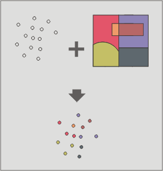

Connessione spaziale (spatial join)
Questo geoprocesso trasferisce gli attributi da un layer di confronto ad uno
di input in maniera analoga ad una unione (join) di tabelle.
La differenza rispetto a quest'ultima sta nel fatto che la condizione di
trasferimento degli attributi non è l'esistenza di un valore comune di un
attributo nelle due tabelle, ma il soddisfacimento di un criterio spaziale
di intersezione o di prossimità.
Il geoprocesso "Connessione spaziale" prevede l'applicazione di uno dei seguenti due
criteri spaziali:
Vicino più prossimo (relazione 1-1). Assegna ad ogni elemento del layer di input gli attributi dell'elemento più vicino del layer di confronto. Nel caso l'elemento più vicino intersechi o, nel caso di poligoni, sia contenuto in quello di input, il geoprocesso considererà il primo elemento analizzato tra le possibili intersezioni.
Contenuto in (relazione 1-N). Pone in relazione ogni elemento del layer di input con gli elementi del layer di confronto che eventualmente interseca. In questo caso, il layer di input non erediterà gli attributi del layer di confronto e l'operazione sarà molto simile a quella del geoprocesso "Dissolvi". Per gli N elementi intersecati da un elemento del layer di input, l'utente avrà la possibilità di scegliere una o più funzioni statistiche (media, minimo, massimo, sommatoria) che saranno applicate agli attributi numerici del layer di confronto.
